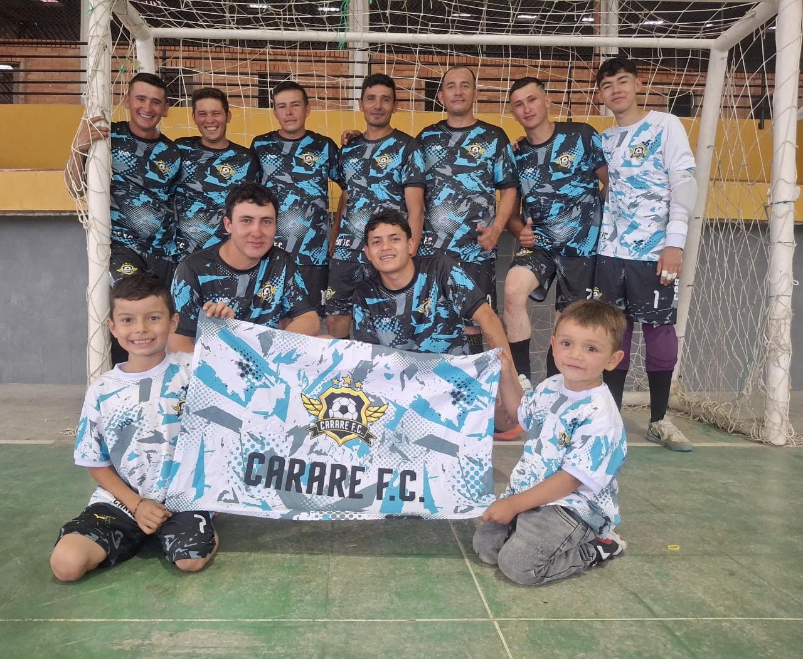

PRUEBAS DE CONFIANZA Y CALIDAD
Aquí encontrarás las pruebas de confianza y calidad de nuestros uniformes.
- ✔️ Características de nuestros uniformes: Alta calidad de impresión, durabilidad y comodidad.
- ✔️ Atención al cliente: Servicio personalizado y respuestas rápidas.
- ✔️ Verificación de calidad: Podemos programar una videollamada o visita para mostrar los productos.
- ✔️ Garantía: Si algún uniforme presenta daños, nos encargamos de su reparación.
Muestras reales y detalles personalizados

Prueba del equipo Carare FC
Ejemplo real de un uniforme personalizado presentado para el equipo Carare FC.
Uniformes para los Templarios
En el video se comenta que les gustaron tanto los uniformes que decidieron mandar a hacer uniformes para toda la familia.
- ✔️ Prueba real: satisfacción con el diseño y la calidad.
- ✔️ Compra ampliada: solicitaron uniformes para toda la familia.
Uniformes personalizados para docentes
Este video presenta el uniforme personalizado realizado para un grupo de docentes.
- ✔️ Diseño personalizado: adaptado a la identidad del equipo.
- ✔️ Presentación profesional: uniformes listos para ser usados y representados.
Uniforme doble faz para Patio Bonito
Presentación de la camiseta doble faz personalizada para el equipo Patio Bonito.
- ✔️ Dos diseños: combina rojo y negro con una propuesta en blanco y azul.
- ✔️ Identidad del equipo: el diseño incluye el nombre Patio Bonito.
¿Dos camisetas o un uniforme doble faz?
El video responde cómo está confeccionada esta prenda reversible y qué tan cómoda resulta.
- ✔️ Confección: son dos uniformes unidos para formar una sola prenda.
- ✔️ Ligereza y secado rápido: aunque tiene dos capas, la prenda no se queda empapada.
Uniforme de los Halcones con diseño cristiano
Uniforme personalizado de los Halcones con una propuesta gráfica de inspiración cristiana.
- ✔️ Diseño: incluye una cruz y la imagen de Cristo en oración.
- ✔️ Mensaje: «Más que amigos, una familia».
- ✔️ Personalización: apellido Morales y número 7 en la espalda.
Uniformes beisboleros para Agromar Vet
Camisas personalizadas para Agromar Vet, presentadas con un estilo beisbolero.
- ✔️ Estilo: corte beisbolero con cuello y botones.
- ✔️ Identidad: llevan el logo de Agromar Vet.
- ✔️ Tela: en el video se destaca su frescura.
Tela grabada con acabado brillante
Un acercamiento al grabado de la tela y al brillo que realza el acabado de la prenda.
- ✔️ Textura: se aprecia el grabado de la tela en detalle.
- ✔️ Acabado: su brillo aporta una apariencia profesional.
Diseños personalizados para cada equipo
Recorrido por diferentes propuestas gráficas para uniformes deportivos.
- ✔️ Variedad de estilos: distintas combinaciones y conceptos gráficos.
- ✔️ A gusto del cliente: cada diseño puede adaptarse a la idea del equipo.
Más uniformes para los Templarios
Una nueva muestra de los uniformes que encargaron para toda la familia.
- ✔️ Pedido ampliado: encargaron más uniformes tras quedar satisfechos con el trabajo.
- ✔️ Para toda la familia: uniformes solicitados para sus familiares.
Camisetas personalizadas para moteros
Diseños personalizados para camisetas de un grupo de motociclistas.
- ✔️ Identidad de grupo: gráficos creados para representar a sus integrantes.
- ✔️ Estilo propio: una propuesta visual personalizada para sus camisetas.
Camisetas personalizadas para negocios
Una propuesta de camisetas con diseño propio para darle identidad a un negocio.
- ✔️ Imagen de marca: prendas con elementos gráficos del negocio.
- ✔️ Personalización: diseños adaptados a cada identidad comercial.
Cuellos premium para uniformes
La elección del cuello también puede marcar la diferencia en el diseño de un uniforme.
- ✔️ Variedad: diferentes estilos de cuello para elegir.
- ✔️ Acabado distintivo: un detalle que ayuda a resaltar cada uniforme.
Sublimación de uniformes deportivos
Muestra del trabajo de sublimación aplicado a uniformes deportivos personalizados.
- ✔️ Diseños personalizados: propuestas para equipos de distintos deportes.
- ✔️ Identidad propia: colores y gráficos pensados para cada equipo.
Ventajas de personalizar tus uniformes
Un resumen de las posibilidades de crear uniformes a la medida de cada equipo.
- ✔️ Identidad del equipo: colores y diseños propios.
- ✔️ Versatilidad: opciones para fútbol, futsal, voleibol y baloncesto.